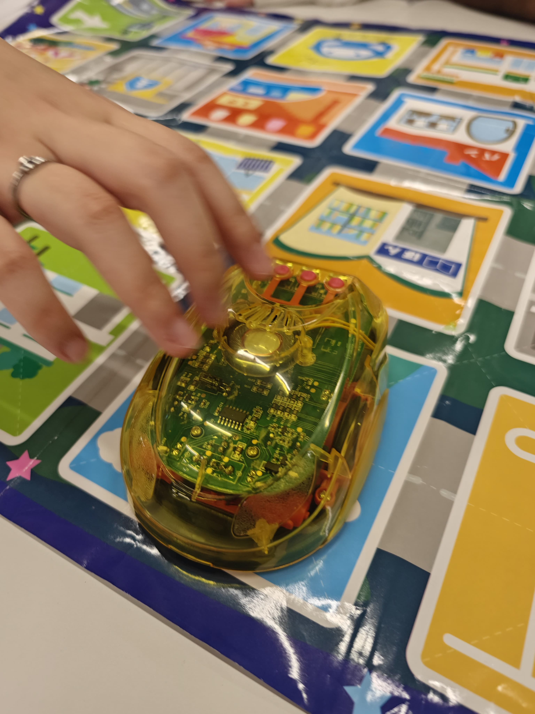

Campus Tour @ Kansai University Senriyama Campus

On June 3rd 2025, our group had the opportunity to visit the prestigious Kansai University Senriyama Campus. Founded in 1886, Kansai University is one of the top-ranked universities in the Kansai district, and it boasts a vibrant academic environment and rich traditions. After arriving at Kandaimae station, we were greeted by the local professors and students.


Despite the heavy rain that day, we received a very warm welcome and the students conducted a thorough campus tour for us. They showcased many important locations that students would use, such as the teaching block and the stadium, and shared with us some aspects of school culture and events, such as an ongoing sports competition named “All Kan-Kwan Games”with Kwansei Gakuin University.

Following the campus tour, we participated in an engaging activity featuring interactive robot cars. Using the tokens, we maneuvered the cars on a paper board marked with grids representing different cities in Japan. Upon reaching each city, the students shared fascinating insights into its history, culture, and local cuisine, deepening our understanding of Japan's diverse regions.We also enjoyed lively conversations with the students, who shared their experiences of university life in Japan. They discussed popular dating spots and activities they enjoy, providing us a glimpse into their daily lives and social interactions. 
The next section of our visit involved playing with Bluetooth-controlled balls. After installing the "Sphero Play" app, we received the balls and engaged in an exciting race. This activity highlighted the innovative and fun aspects of learning at Kansai University.
Lastly, we went to one of the school canteens and tried out the lunch that Japanese students usually have, and it tasted well.

Professors also sent them some Chinese souvenirs to Kansai University’s professors there as a big thanks for their passionate welcoming.


In conclusion, our visit to Kansai University was an enriching experience, despite the rain. The welcoming spirit of the students, combined with interactive activities, offered us invaluable insights into Japanese culture and education. We left with fond memories and a greater appreciation for the academic and social life at Kansai University, making it a highlight of our trip.